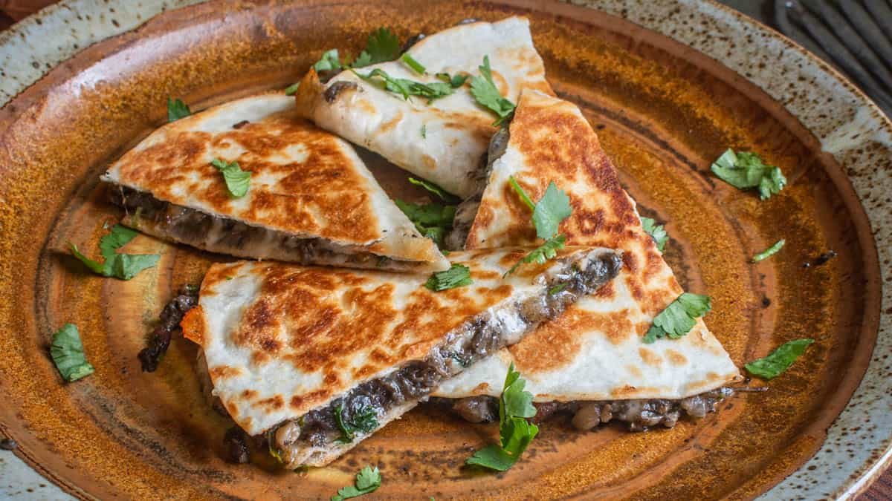
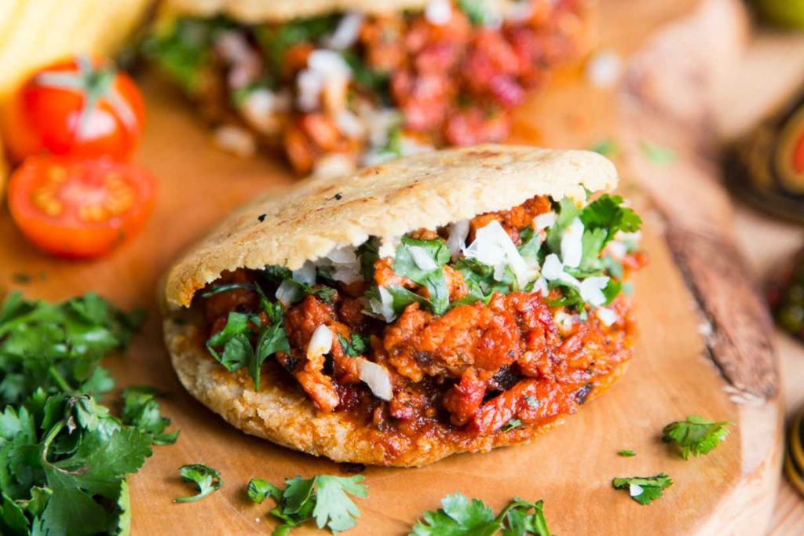
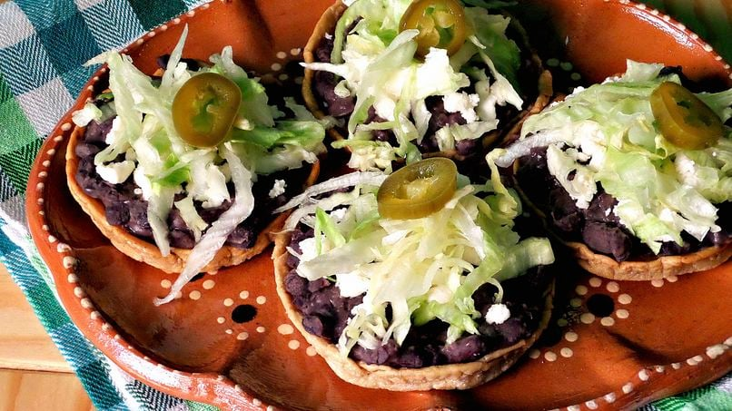

"Tacos de Pastor"
Precio: $25 MXN por taco
Ingredientes: Tortilla de maíz, carne de cerdo adobada, piña, cebolla,
cilantro, salsa roja o verde.

"Quesadillas de Huitlacoche"
Precio: $35 MXN
Ingredientes: Tortilla de maíz, huitlacoche (hongo de maíz), queso Oaxaca,
epazote, crema y salsa.

"Gordita de Chicharrón"
Precio: $30 MXN
Ingredientes: Masa de maíz, chicharrón prensado, frijoles refritos, lechuga,
crema, queso y salsa.

"Sopes de Frijoles"
Precio: $28 MXN
Ingredientes: Masa de maíz, frijoles refritos, crema, lechuga, queso fresco
y salsa verde o roja
